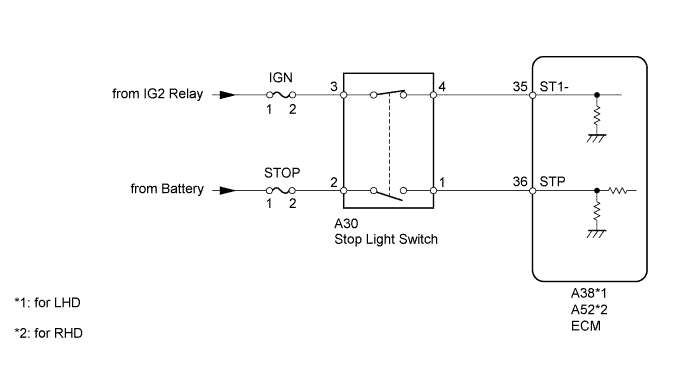
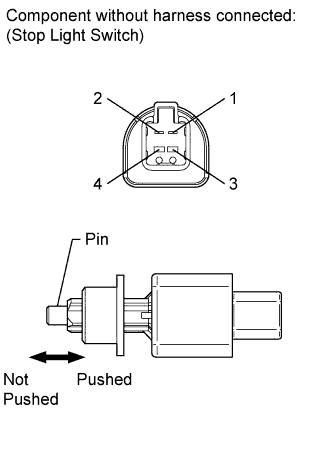
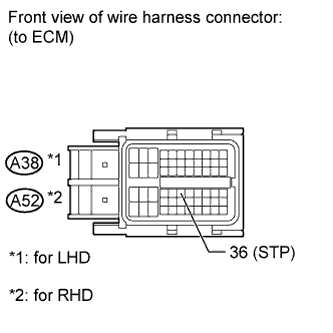

DTC P0724 Brake Switch "B" Circuit High |
| DTC Code | DTC Detection Condition | Trouble Area |
| P0724 | The stop light switch remains on even when the vehicle is driven in a GO (30 km/h (18.63 mph) or more) and STOP (less than 3 km/h (1.86 mph)) pattern 5 times (2 trip detection logic). |
|

| Item | Measurement Item/ Range (Display) | Normal Condition | Diagnostic Note |
| Stop Light Switch | Stop light switch status/ ON or OFF |
| - |
| 1.INSPECT STOP LIGHT SWITCH |
 |
Remove the stop light switch.
Measure the resistance according to the value(s) in the table below.
| Tester Connection | Switch Condition | Specified Condition |
| 1 - 2 | Switch pin not pushed | Below 1 Ω |
| Switch pin pushed | 10 kΩ or higher | |
| 3 - 4 | Switch pin not pushed | 10 kΩ or higher |
| Switch pin pushed | Below 1 Ω |
|
| ||||
| OK | |
| 2.CHECK HARNESS AND CONNECTOR (ECM - BATTERY) |
 |
Disconnect the ECM connector.
Measure the voltage according to the value(s) in the table below.
| Tester Connection | Condition | Specified Condition |
| A38-36 (STP) - Body ground | Brake pedal is depressed | 11 to 14 V |
| A38-36 (STP) - Body ground | Brake pedal is released | Below 1 V |
| Tester Connection | Condition | Specified Condition |
| A52-36 (STP) - Body ground | Brake pedal is depressed | 11 to 14 V |
| A52-36 (STP) - Body ground | Brake pedal is released | Below 1 V |
|
| ||||
| OK | ||
| ||